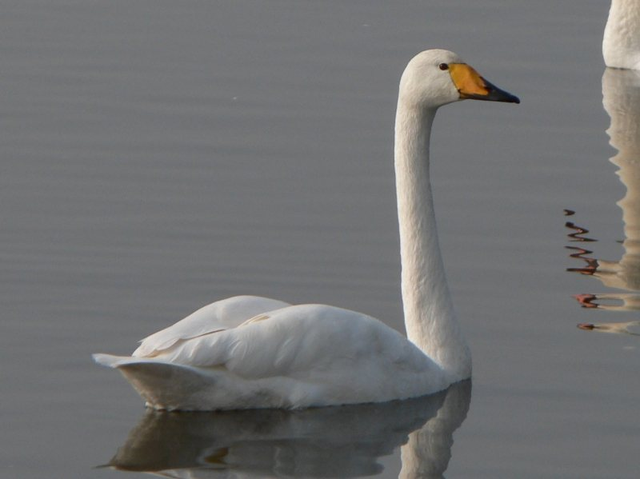

山东 · 荣成 海草房与海草床 Rongcheng, Shandong · Seaweed roofs & seagrass beds
一株草，
五种名字
One plant,
five names
在胶东，它叫海带草，盖在屋顶上。在英文里，它叫 eelgrass，是鳗鱼的藏身处。在法文里，它是 zostère——希腊语里的“腰带”。同一株草，被不同的语言叫成了不同的东西。 In Jiaodong it is haidai cao, seaweed laid over a roof. In English it is eelgrass, the eel’s hiding place. In French it is zostère — the Greek word for a belt. One plant, named into different things by different languages.
向下滚动，看这株草的一生 Scroll to follow one plant through its lives
01屋顶The Roof
在荣成，
海草不是杂草，
是屋顶。
In Rongcheng,
seaweed is not a weed.
It is a roof.
东楮岛村，144 户人家，650 间海草房。建造一栋海草房要 70 多道工序，最厚处可达 4 米，三四个工匠要苫十几天。
Dongchudao village: 144 households, 650 seaweed-thatched houses. A single house takes more than 70 steps, can reach four metres at the ridge, and keeps three or four craftsmen working for days.
晒干的大叶藻能用十几年。它把碳锁在屋顶里，也把一种生活锁进胶东的海风。
Dried eelgrass lasts more than a decade. It locks carbon into the roof — and a way of life into the sea wind of Jiaodong.
02海底The Meadow
可它真正的家，在海底。 But its real home is under water.
大叶藻在海里长成草原。海草床与红树林、珊瑚礁并称三大典型近海生态系统，也是地球上最有效的碳封存系统之一。
Eelgrass grows into meadows. Seagrass beds, mangroves and coral reefs are the three great coastal ecosystems — and seagrass is among the most effective carbon sinks on Earth.
但据 2021 年报道，青岛、威海、烟台近岸，超过 80% 的海草床已经完全消失。
Yet by 2021, more than 80% of the seagrass beds off Qingdao, Weihai and Yantai had completely disappeared.
80%近岸海草床已消失of nearshore beds gone
屋顶上的草，是从海里来的。
海里的草没了，屋顶也撑不了多久。
The grass on the roof came from the sea.
When the sea loses its meadows, the roofs will not hold for long.
03名字The Names
五种语言，
五种看它的方式。
Five languages,
five ways of seeing it.
同一株草，每种语言都先记住了自己最在意的那一部分。 Each language remembered the part it cared about most.
-
中文 大叶藻 海带草 · 鳗草 点开看名字记住了什么 Tap to see what the name remembers
按叶形取名“大叶藻”；按用途，叫它“海带草”——盖屋顶，也喂天鹅。名字记住的是它能做什么。
Named for its broad leaves; called haidai cao for use — roofing, and food for swans. The name remembers what it can do.
-
English eelgrass eel grass 点开看名字记住了什么 Tap to see what the name remembers
“鳗鱼的草”。鳗鱼把叶片当藏身处，在草间觅食、躲避。名字记住的是谁住在里面。
“The eel’s grass.” Eels shelter among the blades, hunt and hide there. The name remembers who lives inside.
-
Français zostère zostère marine 点开看名字记住了什么 Tap to see what the name remembers
源自希腊语 zōstēr，意思是“腰带”，因细长叶片得名。名字记住的是形状。
From Greek zōstēr, a belt — for its long, narrow leaves. The name remembers the shape.
-
Русский взморник взморник морской 点开看名字记住了什么 Tap to see what the name remembers
来自 взморье，“海边”。晒干后用作填充与包装材料。名字记住的是它被使用的方式。
From vzmorye, “the seaside.” Dried, it served as stuffing and packing material. The name remembers how it was used.
-
日本語 アマモ 甘藻 点开看名字记住了什么 Tap to see what the name remembers
汉字写作“甘藻”。英文名 eel grass 意为“鳗草”，与中文的“鳗草”不约而同。名字记住的是同一件事。
Written 甘藻 in kanji. English calls it eel grass; Chinese calls it 鳗草, eel grass too. Two languages landed on the same image.
建材、鱼窝、腰带、海边之物。语言不同，看见的部分就不同。
桥，就架在这些不同的名字之间。
Building material, fish shelter, belt, thing-of-the-seashore. Different languages see different parts.
The bridge is built between those names.
04修复The Repair
有人潜下去，
把它种回去。
Some people dive down
to plant it back.
2017 年起，荣成在全国率先规模化增殖鳗草。截至 2025 年 11 月，已放流大叶藻 110 万株，修复海草床 1250 亩，另有 1500 亩在建。
Since 2017 Rongcheng has run China’s first large-scale eelgrass restoration. As of November 2025 it had released 1.1 million plants and restored 1,250 mu of seabed, with another 1,500 mu underway.
海草床大约二十多天更新一次，固碳能力远超陆地森林。种下去的不只是草，是一层能存碳的海底。
Seagrass renews itself roughly every twenty days and stores carbon far faster than forests on land. What is planted is not only grass, but a seabed that can hold carbon.
- 2006海草房建筑技艺列入山东省级非遗Seaweed-house craft listed as provincial intangible heritage
- 2017荣成在全国率先规模化增殖鳗草China’s first large-scale eelgrass restoration begins
- 2021报道：青岛、威海、烟台近岸 80% 海草床消失Report: 80% of nearshore beds gone
- 2024烟墩角入选联合国旅游组织“最佳旅游乡村”Yandunjiao named a UN Tourism Best Tourism Village
- 2025修复 1,250 亩，在建 1,500 亩1,250 mu restored; 1,500 mu underway
05天鹅The Swan
冬天，大天鹅
来这里吃它。
In winter, the swans
come to eat it.
大叶藻是大天鹅越冬的主食之一。烟墩角保存着 1300 余间海草房，70 多家民宿渔家乐，2023 年接待游客超过 10 万人次。
Eelgrass is one of the whooper swan’s main winter foods. Yandunjiao retains more than 1,300 seaweed houses and over 70 guesthouses; in 2023 it received more than 100,000 visitors.
屋顶、海底、天鹅、游客——它们是一条链子上的四个环。
Roof, seabed, swan, visitor — four links in one chain.

06行动Act
名字还在，
草就得在。
The name is still here.
So the grass has to be.
-
01
去看
Go and see
冬天去烟墩角或东楮岛。看天鹅，别投喂；看屋顶，问问它哪年翻修过。
Visit Yandunjiao or Dongchudao in winter. Watch the swans — don’t feed them. Look at the roofs; ask when each was last re-thatched.
-
02
去查
Check the numbers
这一页的每个数字都标了来源和年份。查得到，才算数。
Every figure on this page carries a source and a year. If it can’t be checked, it doesn’t count.
-
03
去讲
Tell someone
把这株草的五个名字，讲给一个不说中文的人听。
Tell the five names of this plant to someone who doesn’t speak Chinese.
以语为桥，先得让桥两头，看见同一株草。 To build a bridge of words, both ends must first see the same plant.